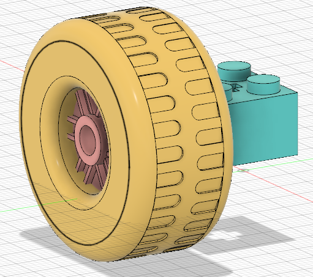

Class 2: 2D Design & Cutting
Assignment: Work through a Fusion 360 tutorial, and document your learning. Select at least 3 components from the kit. Measure them using calipers, and model them in Fusion 360 (or other program). Create an assembly of these components, and document your work on your webpage.
I've never used calipers or CAD software before, so this week's lesson had a higher learning curve for me. Nevertheless, after a little bit of playing around and working through Autodesk Fusion 360 tutorials, I feel as if I now understand how to use Fusion 360 to create sketches and 3D models.
I worked through this tutorial and learned how to create sketches, and I learned how to turn the sketch into a 3D figure from class using the extrude and filet features to create a press-fit assembly and then changed it into an array. Unfortunately due to social distancing, we weren't able to use the .dxf files of our sketches with the laser cutter in person.
For my assignment, I decided to model a simple wheel, bearing, and axle using the Lego parts included in the kits we received. Here are the parts that I set out to model:
Here are some of the dimensions of the parts that I measured using the caliper.
The wheel was the easiest piece to model. After making a sketch with two concentric circles and extruding the outside ring, I used the filet feature to make the edges of the wheel more rounded.

Next came the bearing. This one was a bit harder to sketch since I wanted to try creating the spokes of the wheel. To start, I used lines to divide the circle into 6 parts and then used the offset feature on each line twice per side of the line. I then made a few more concentric circles and finally used the extrude feature to make the divets on the spoke.
I also tried to create the grooves on the side of the cylinder. To do this, I looked at this tutorial. I first created offset planes and then used the split face feature. Then, I used the push/pull feature to create the grooves.
The final piece I modeled was the Lego axle. Here's a sketch:
After extruding this sketch, I had to create the axle part by editing a sketch of one of the sides of the Lego piece. In this sketch, I found the midpoint of the rectangle and then created a circle which I extruded to the appropriate length.
Finally, I dragged each of the three components into a new assembly file and moved them so that they would line up. Here's the wheel and bearing lined up:
And after adding the Lego piece, here's a side-by-side comparison of my completed assembly next to the actual construction.
